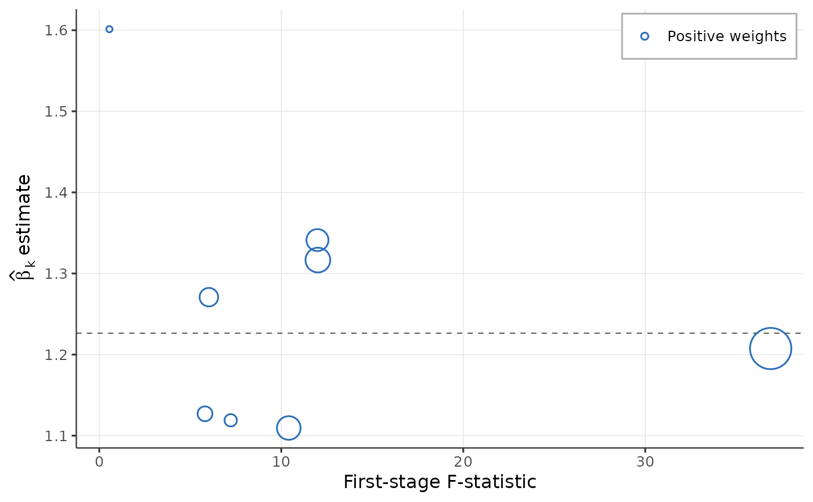
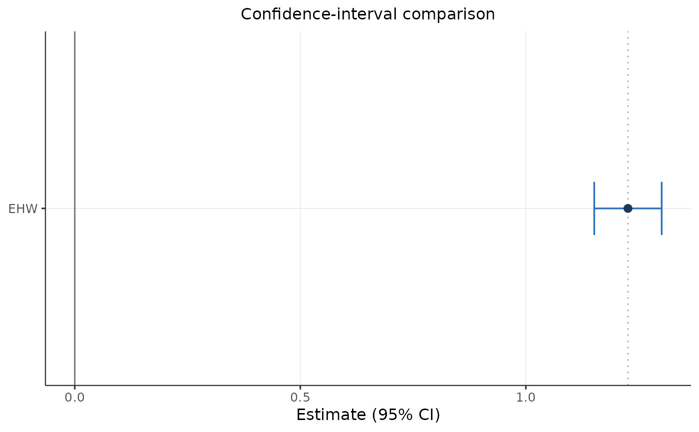

Convenience wrapper that builds an [ssb_design()] from raw pieces and runs [ssb_pipeline()] — the "give me everything" entry point. The identification route `exogenous` is **required** (see [ssb_design()]) and determines the inference and the diagnostic battery.
Usage
ssbartik(
data,
shares,
shocks,
y = "y",
x = "x",
location = "location",
sector = "sector",
time = NULL,
controls = NULL,
weights = NULL,
cluster = NULL,
share_col = "share",
shock_col = "shock",
exogenous,
covariates = NULL,
pre_y = NULL,
placebo_y = NULL,
shock_covariates = NULL,
top = 5,
level = 0.95
)Arguments
- data
A unit-level `data.frame`: one row per location (or location-period). Must contain `y`, `x`, `location`, and any `controls`, `weights`, `cluster` columns referenced below.
A long `data.frame` of exposure shares with columns `location`, `sector`, the share column (`share_col`), and `time` for panels.
- shocks
A `data.frame` of shocks with columns `sector`, the shock column (`shock_col`), and `time` for panels.
- y, x
Column names (strings) of the outcome and endogenous treatment.
- location, sector
Column names of the unit and sector identifiers.
- time
Optional column name of a period identifier (present in `data`, `shares` and `shocks`) for panel designs.
- controls
Optional character vector of control columns in `data`. Numeric columns enter linearly; factor or character columns are expanded into dummies, so period or region fixed effects can be supplied as factors. On the shift route, period fixed effects (interacted with the sum of exposure shares) are added automatically in panels — shocks are compared within periods; on the share route in panels, supply period fixed effects here yourself.
- weights
Optional column name of regression weights in `data`.
- cluster
Optional column name of a clustering variable in `data`.
Name of the exposure-share column in `shares` (default `"share"`).
- shock_col
Name of the shock (shift) column in `shocks` (default `"shock"`).
- exogenous
**Required.** Which identification route the design rests on: `"shift"` (exogenous shocks) or `"share"` (exogenous shares). `"shock"`/`"shares"` are accepted aliases. There is no default: the route determines the automatic controls, the appropriate standard errors and the relevant diagnostics, so it must be chosen deliberately.
- covariates, pre_y, placebo_y, shock_covariates, top, level
Passed to [ssb_pipeline()].
Examples
# Bring your own data; this is a small synthetic design for illustration.
set.seed(1)
n_loc <- 60L; n_sec <- 8L
shares <- expand.grid(location = seq_len(n_loc), sector = seq_len(n_sec))
shares$share <- stats::runif(nrow(shares))
tot <- tapply(shares$share, shares$location, sum)
shares$share <- shares$share / tot[as.character(shares$location)]
shocks <- data.frame(sector = seq_len(n_sec), shock = stats::rnorm(n_sec))
Z <- tapply(shares$share, list(shares$location, shares$sector), sum)
Z[is.na(Z)] <- 0
inst <- as.numeric(Z %*% shocks$shock)
dat <- data.frame(location = seq_len(n_loc),
x = 4 * inst + stats::rnorm(n_loc, sd = 0.3))
dat$y <- 1.2 * dat$x + stats::rnorm(n_loc, sd = 0.3)
res <- ssbartik(dat, shares, shocks, exogenous = "share")
#> ssb_overid(): estimator = 'auto' resolved to 'liml' (K = 7 instruments, n = 60; see ?ssb_overid).
res
#> == ssBartik result ==============================================
#> route : exogenous SHARE
#>
#> <ssBartik estimate>
#> route : exogenous SHARE -> conventional (EHW / cluster) inference
#> first-stage F : 324.9
#> method estimate std.error conf.low conf.high note
#> EHW 1.23 0.0382 1.15 1.3
#>
#> <ssBartik first-stage strength>
#> standard robust F : 324.9
#> effective (exposure) F : 1308.9
#>
#> <ssBartik overidentification test (Sargan-Hansen)>
#> estimator : LIML over 7 share instruments (1 collinear dropped)
#> beta = 1.2218 se = 0.0396 [1.144, 1.300]
#> Hansen J = 5.15 on 6 df, p = 0.5242
#> instruments dropped: 0 (min_F / degenerate); weak (F<10): 4
#> small p => reject joint validity of the share instruments
#> (exclusion failure for some shares OR treatment-effect heterogeneity)
#>
#> <ssBartik Rotemberg weights>
#> overall beta_hat : 1.2263
#> sum positive alpha : 1.000 sum negative alpha : 0.000
#> largest weight : alpha = 0.439 (6)
#> ! one share instrument carries |alpha| = 0.44; check robustness via ssb_drop_top()
#> shocks demeaned (overall, exposure-weighted) before weighting -- GPSS/BHJ normalisation
#> top 5 sectors by |alpha|:
#> sector alpha beta F
#> 6 0.4390 1.21 36.89
#> 5 0.1488 1.32 12.01
#> 2 0.1346 1.11 10.41
#> 1 0.1144 1.34 11.99
#> 4 0.0788 1.27 6.02
#> (negative weights are not by themselves a red flag; see GPSS 2020)
#>
#> <ssBartik Rotemberg-weight summary>
#> largest weight: alpha = 0.439 (6)
#> cor(alpha, beta_k) = -0.22 cor(alpha, F) = 0.99
#> top share instruments by |alpha|:
#> sector alpha beta F g
#> 6 0.4390 1.21 36.89 -1.901
#> 5 0.1488 1.32 12.01 1.263
#> 2 0.1346 1.11 10.41 1.134
#> 1 0.1144 1.34 11.99 0.807
#> 4 0.0788 1.27 6.02 -0.779
#>
#> [leave-one-out] overall beta = 1.2263
#> sector alpha beta_drop
#> 6 0.4390 1.24
#> 5 0.1488 1.21
#> 2 0.1346 1.24
#> 1 0.1144 1.21
#> 4 0.0788 1.22
#> =================================================================
# \donttest{
autoplot(res) # headline Rotemberg figure

autoplot(res$estimate) # CI comparison

# }